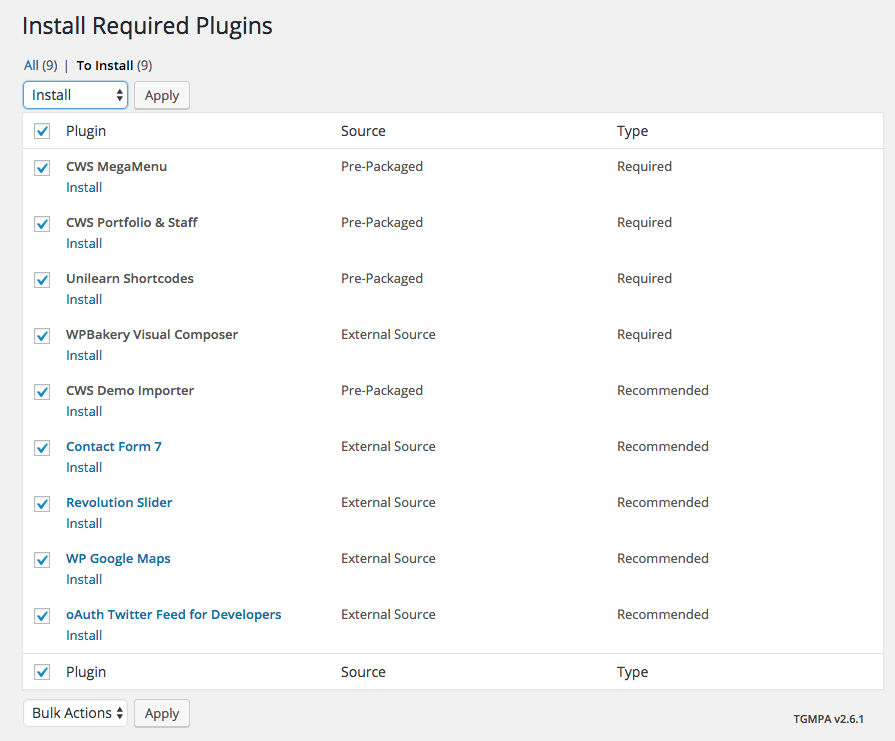
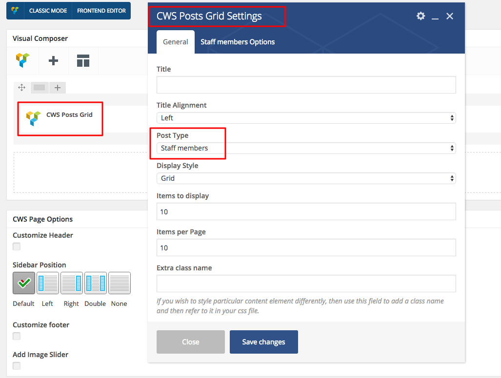

UniLearn
Education and Courses WordPress Theme
Thank you for choosing our products. This guide will walk you through every aspect of setting up your new website.
If you ever have any questions, please kindly send us e-mail. You can also follow us on Twitter and Themeforest to keep track of all our theme updates and future themes.
Theme Installation
Installing your new theme is an easy process. The steps bellow will guide you through:
-
Download the ZIP package from Themeforest Dashboard and Unzip it.
-
Inside you will find the file named
UniLearn.zip.
-
Log in into your Wordpress Dashboard and click
Appearance > Themes tab.
-
Next click the
Install Themes button, then click Upload.
-
Click
Browse and locate the above mentioned UniLearn.zip, click Install Now.
-
After the theme has been installed click
Activate Theme , your new theme is set up and ready!
-
If you prefer to manually upload the theme via FTP you should unpack UniLearn.zip into
UniLearn folder and transfer this folder into /wp-content/themes directory on your FTP, so your FTP path should be /wp-content/themes/.
One Click Demo Import
Save your time! One click demo import content is already implemented into this theme!
-
Activate your theme.
-
Install all the bundled plugins.
Click "Begin installing plugins":
Choose all pluins, select "Install" and click "Apply" button:

Here's installation result message:
To begin importing demo content click Tools -> Import -> CWS Demo Importer:
Click the "Start demo content importing" button. Please note, if you wish to import the woocommerce demo content, install the plugin first.
The import results should look like this:
That's all, your demo content is setup and the site is ready to use.
-
Final step is to import Revolution Slider demo content:
Click "Revolution Slider" -> "Import Slider":
Select the needed dummy file and click "Import Slider" button:
Result should be like this:

Do the same to import all the sliders that come with this theme. They all should be located at "Main Files/Demo/RevSlider" folder.
All done! Your website should look the same as the demo one!
Theme Customization
Our theme supports child-themes and includes a child theme (called "UniLearn-child") in the package.
If you plan to customize any page template, stylesheet or any other theme files we highly recommend that you use a child theme.
A child theme is a theme that inherits the functionality of another theme, called the parent theme. Child themes allow you modify, or add to the functionality of the parent theme.
A child theme is the best, safest, and easiest way to modify an existing theme, whether you want to make a few tiny changes or extensive changes.
Instead of modifying the theme files directly, you can use a child theme and override within.
Child theme usage gives you a lot of advantages:
- Safe theme updates
- Easy to Extend
- Fallback Safe
- and much more
There's a nice article explaining when you should use a child theme.
Retina Graphics
Our theme supports Retina Graphics and includes a script, which converts every uploaded image into retina-ready image. The only you should keep in mind is the image size.
So, if you intend to use an image of a certain size (saying you'd like to use a 600x200px image), you should upload a double sized image (1200x400px) to make it look great on Retina displays.
The above method is good for blogs, galleries, featured images etc. however it won't work for your content images. The content images are not automatically resized so you should set the width and height for each image manually.
For example, if you're going to insert an image of 300x300px you will need to set the width and height to 150x150px.
Options Panel
UniLearn comes with a very powerful, intuitive and very easy-to-use Theme Options panel, which can be accessed by logging into the Wordpress dashboard and clicking the "Theme Options" tab, located under the "Appearance" tab.
With the help of our Options Panel you can customize the theme's look and functionality according to your needs. Settings like logo, color scheme, patterns, page layouts, typography, social links and many other options are easily setup with its help.
Here's a brief preview of the panel's options:
-
Header - here you can upload logo, add header or menu spacings, setup menu and top bar.
-
Footer - this tab will help you customize look and feel of your footer area.
-
Layout - here you can add default sidebars to your page types: Page, Blog, Portfolio, Sftaff and generate new sidebars.
-
Colors - this section will help you adjust theme colors.
-
Typography - this section gives you the opportunity to customize your theme's font type, color, size, weight etc.
-
Socials - here you can customize your social networks.
-
Maintenance - the place, where you will add the Item Purchase Code in order to import demo content.
-
WooCommerce - using this cryptically named section you can select desired shop layout and assign number of products per page.
-
LearnPress - everything about configuring LearnPress settings.
-
Import / Export Options - here you can backup/restore or import your theme's settings.
Content Management
We're using Visual Composer plugin in this theme, so please refer to developer's documentation here.
Portfolio
Portfolio Setup
UniLearn theme comes with various portfolio pages. All thumbnail images are automatically resized according to one of the following page layouts:
-
4 Columns
-
3 Columns
-
2 Columns
-
With Sidebar
-
With Double Sidebars
-
Full-width
Here are instructions for creating a portfolio page:
-
First, let's create a Portfolio category that will be used for your portfolio items. Any category can serve as a filter, so you have to create some categories if you plan to create a filtered gallery.
-
Log into your Wordpress dashboard and click Portfolio > Categories.
-
Enter a category name and click Add New Category.
-
Now you are ready to start creating portfolio items. Click Portfolio > Add Portfolio Item.
-
Name this item and make a brief description in the content section.
-
Assign a "featured image". If you want to override the popup image which you've just set as featured, you should fill in the "Custom url" field.
The popup item can be an image, youtube video, flash movie or iFrame. Here are samples to show how these URL's should look:
-
Image: http://www.yourdomain.com/wp-content/uploads/project1.jpg
-
YouTube: http://www.youtube.com/embed/L9szn1QQfas?autoplay=1
-
Flash: http://www.adobe.com/jp/events/cs3_web_edition_tour/swfs/perform.swf?width=792&height=294
-
Vimeo: http://player.vimeo.com/video/8245346
-
iFrame: http://www.apple.com?iframe=true&width=850&height=500
-
Now insert the URL for the popup item (see examples above) into the 'Custom url' field. If you leave it empty, the featured image will be used as a popup.
-
Repeat those steps for creating as many portfolio items as you wish.
-
The next step is to create a new Portfolio Page which will show your portfolio items you just created. Click Pages > Add New and insert the portfolio shortcode using Shortcode Generator into the content.
-
Now you can select the sidebar position located at the bottom of the page and save your changes.
-
That's all, your portfolio page is ready!
Our team
UniLearn theme comes with Our team post type bundled. It's very easy to handle and very powerful.
Bellow are instructions for creating an Our team page:
-
First, let's create a department which will be used for filtering purposes. So you have to create some departments if you plan to create a filtered staff page.
-
Log into your Wordpress dashboard and click Our Team -> Departments tab.
-
Input a title and click Add Department button.
-
Now you are ready to start creating staff items. Click Add new tab.
-
Name this item and make a brief description in the content section. Check the Reference to single checkbox if you wish to use a description page for the current staff item.
-
Add as many social networks as you need by clicking the Add Social Network button.
-
Assign a "featured image".
-
Repeat the above steps for creating as many staff items as you wish.
-
Next step is to add a new Page which will show the staff items you just created. Click Pages > Add New and insert the staff module using Visual Composer into the content:

-
Now you can select a sidebar position located at the bottom of the page and save your changes.
-
That's all, your staff page is ready!
Slider
Our theme uses a very powerful Revolution Slider plugin. The slider's documentation may be found here.
Social Networks Setup
With the help of our Theme Options you can add as many social networks as you wish. They all will be displayed at the top bar or footer areas. Image bellow describes the way you can add the networks:

Don't forget to insert your Twitter API Keys and Tokens into the following fields if you wish to display your own tweets:

They will be pulled by the following content module, called "CWS Twitter" or "CWS Twitter Widget":

In case you don't know where to find the Twitter API keys and tokens, the steps bellow will help you create them:
Twitter Setup
- First, you will need a Twitter account.
- Go to apps.twitter.com and login.
- Click "Create a new application" and enter the necessary information.
- Once your Application is created, click on "Create my access
token".
- Now, when you have all of the necessary keys, secrets and tokens
for using Twitter plugin, open the "Social Options" (see picture above) tab within your Theme Options panel and fill in the required fields.
That's all, your twitter is setup and ready to use.
Social Networks Setup
With the help of our Theme Options you can add as many social networks as you wish. They all will be displayed at the top bar or footer areas. Image bellow describes the way you can add the networks:
Don't forget to insert your Twitter API Keys and Tokens into the following fields if you wish to display your own tweets:
They will be pulled by the following content module, called "CWS Twitter" or "CWS Twitter Widget":

In case you don't know where to find the Twitter API keys and tokens, the steps bellow will help you create them:Twitter Setup
- First, you will need a Twitter account.
- Go to apps.twitter.com and login.
- Click "Create a new application" and enter the necessary information.
- Once your Application is created, click on "Create my access
token".
- Now, when you have all of the necessary keys, secrets and tokens
for using Twitter plugin, open the "Social Options" (see picture above) tab within your Theme Options panel and fill in the required fields.
That's all, your twitter is setup and ready to use.